Two photos are related by a homography when they share a center of projection, so for each set we stood in one spot and turned the phone in place, taking four portrait shots from left to right with a lot of overlap between neighbors. Everything was shot on the iPhone 14 Pro’s main camera (24 mm equivalent). The photos were downscaled to 1200 px on the long side when loaded.
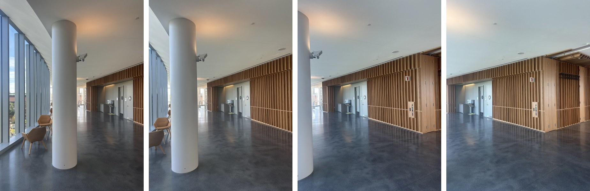
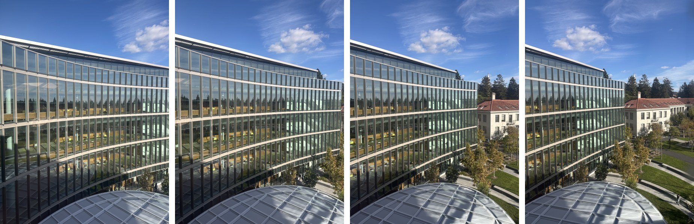
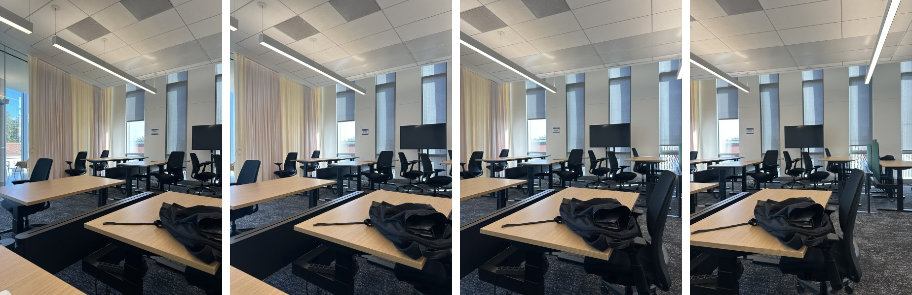
Due to perception and depth, anything closer to the camera will move more as the camera is turned. Therefore, the movement of the backpack in the gateway study room is much more than, say, the TV at the back.
A homography H maps a point (x, y) in one image to (x′, y′) in another, up to a scale w. It has nine entries but only eight degrees of freedom, so we fix the bottom-right one to 1:
Substituting w = h7·x + h8·y + 1 and moving everything to one side gives two equations that are linear in the eight unknowns, one for x′ and one for y′:
Every correspondence adds these two rows, so n points give a 2n × 8 system Ah = b. Four points pin H down exactly, but then a couple of pixels of clicking error throw the whole thing off, so we clicked excessively and solved the overdetermined system with least squares.
clicking the correspondences
Here are the points for registering the third hallway photo (left) onto the second (right):
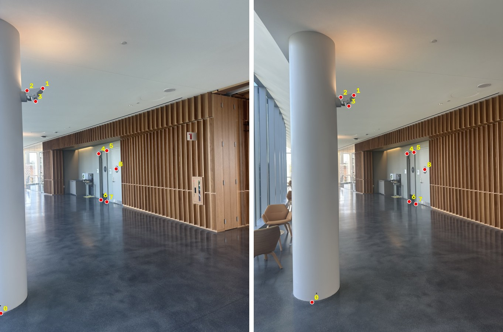
The first four rows of A and b for this pair (the first two points), and the H that comes out of the full 18 × 8 system:
The right-hand columns of A are huge compared to the rest because they multiply pixel coordinates together. Least squares handles this fine at this size, but it’s why the last row of H ends up so tiny: h7 and h8 multiply numbers in the hundreds.
All nine pairs used in the mosaics are below. Each set is registered as a chain of neighbors (image 1 → 2, 3 → 2, 4 → 3), since the outer photos barely overlap the middle one. The error column is how far, on average, H moves each clicked point from to its partner, measured on the 1200 px images.
| mosaic | pair | points | mean error (px) | H |
|---|---|---|---|---|
| interior | 1 → 2 | 9 | 5.71 | [[ 1.1786 0.0156 -257.5137] [ 0.0774 1.1207 -53.8376] [ 0.0002 0. 1. ]] |
| interior | 3 → 2 | 9 | 2.08 | [[ 0.6366 -0.0723 250.6526] [-0.1378 0.6869 110.7209] [-0.0003 -0.0002 1. ]] |
| interior | 4 → 3 | 12 | 3.17 | [[ 0.7954 0.0521 164.1572] [-0.1814 0.9758 47.6165] [-0.0003 0.0001 1. ]] |
| building | 1 → 2 | 20 | 4.29 | [[ 1.2176 0.0023 -224.1586] [ 0.1418 1.1054 -72.1378] [ 0.0002 -0. 1. ]] |
| building | 3 → 2 | 29 | 3.98 | [[ 0.7716 -0.008 216.4502] [-0.1352 0.9201 48.0034] [-0.0003 0. 1. ]] |
| building | 4 → 3 | 22 | 3.69 | [[ 0.8101 -0.0287 187.8521] [-0.0936 0.8883 56.4804] [-0.0002 -0. 1. ]] |
| classroom | 1 → 2 | 18 | 3.76 | [[ 1.1043 0.0103 -113.7258] [ 0.0586 1.0585 -27.0527] [ 0.0001 -0. 1. ]] |
| classroom | 3 → 2 | 12 | 3.23 | [[ 0.757 -0.0276 205.2188] [-0.1552 0.8499 85.0516] [-0.0002 -0. 1. ]] |
| classroom | 4 → 3 | 16 | 2.69 | [[ 0.8147 -0.0132 177.8877] [-0.122 0.921 41.8544] [-0.0002 -0. 1. ]] |
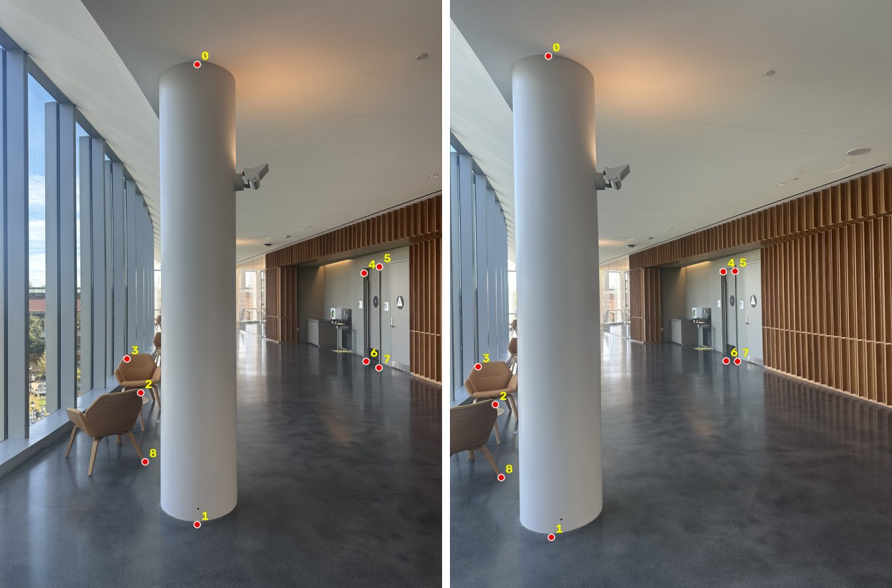
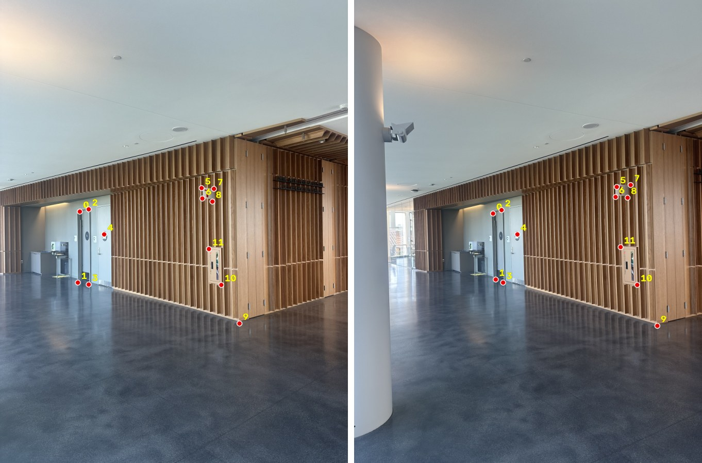
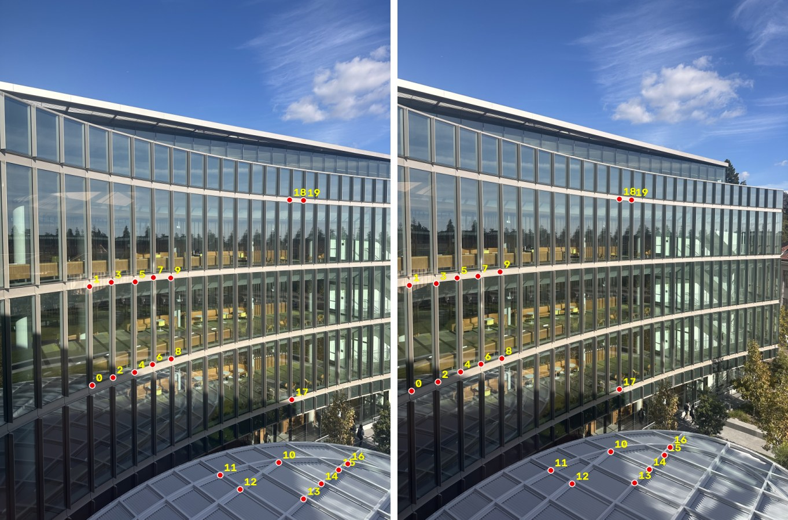
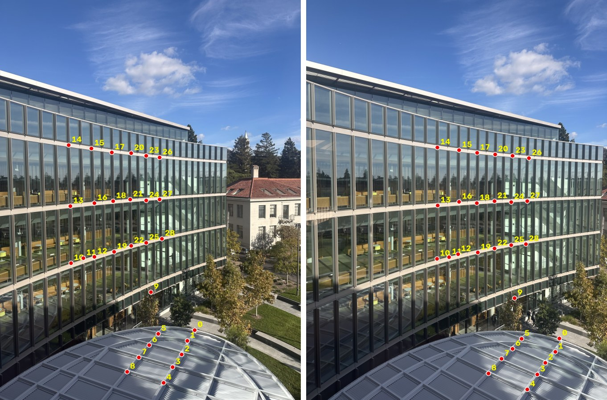
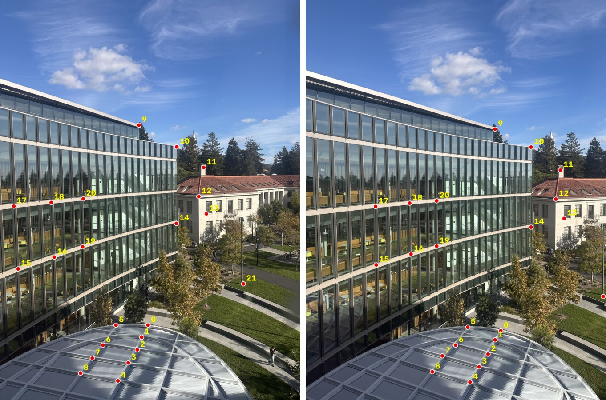
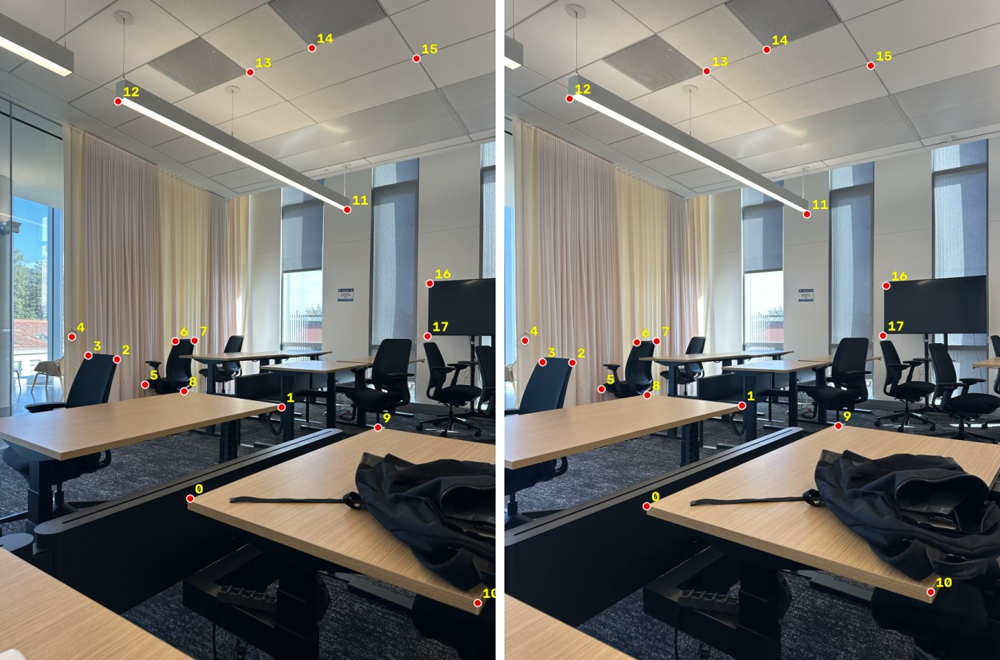
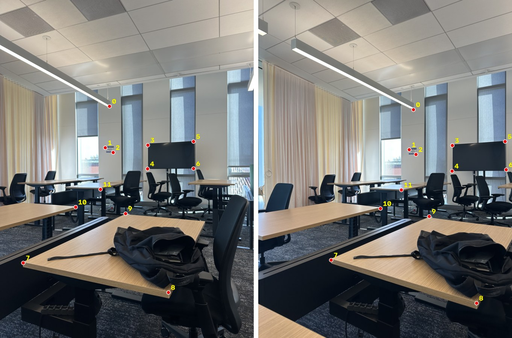
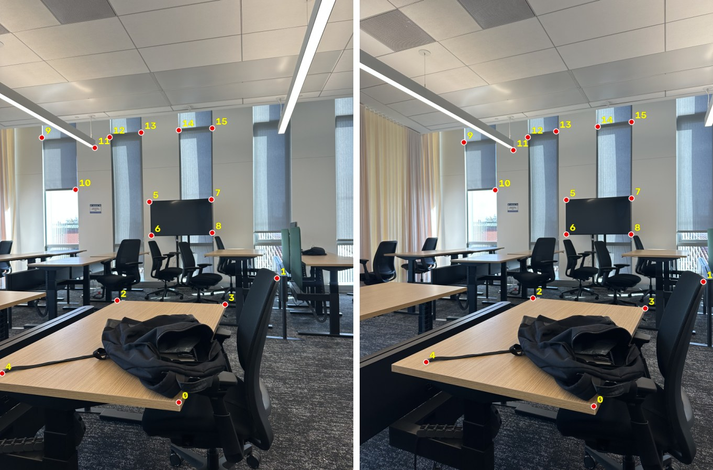
The matrices make sense when read side by side. Image 1 sits to the left of image 2, so its H shifts things left (h3 ≈ −114 to −258) and slightly enlarges them, while images 3 and 4 are shifted right and shrunk. The nonzero h7 and h8 indicates that we are performing a warp rather than an affine one: basically, rotating the camera.
Both warps use inverse warping. Pushing every input pixel through H would leave holes wherever the image gets stretched, so instead we go the other way: for every pixel in the output, H−1 tells us where it came from in the input, and we sample the input there. The output size comes from sending the four corners of the input through H and taking their bounding box.
Pixel (0, 0) is the center of the first pixel, so a source location is valid when it lies in [0, w − 1] × [0, h − 1]. Anything outside that gets alpha 0, which is kept as a fourth channel. That way “nothing here” never gets confused with a black pixel, and it’s exactly the mask the mosaic step needs later.
The two interpolation methods only differ in sample:
rectification
Before trusting any of this on a mosaic, we can test it on a single photo. If we know an object is a rectangle, we click its four corners (top-left, top-right, bottom-right, bottom-left) and ask H to send them to a real rectangle. The target keeps the top-left corner and the length of the top edge where we clicked them, and gets its height from the object’s real aspect ratio.
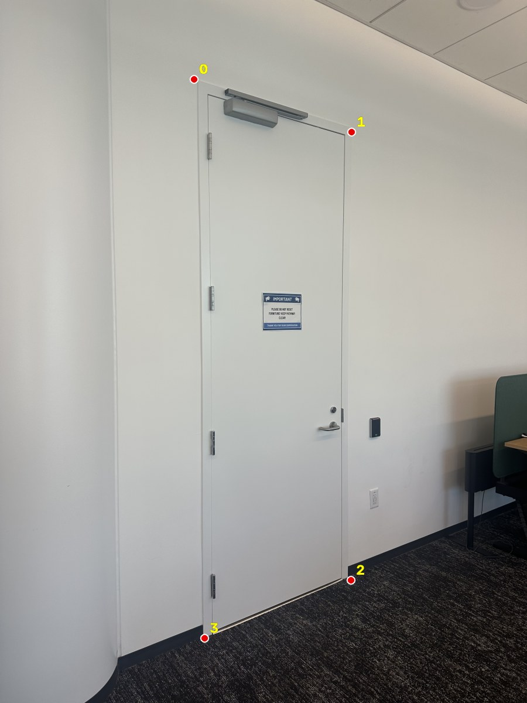
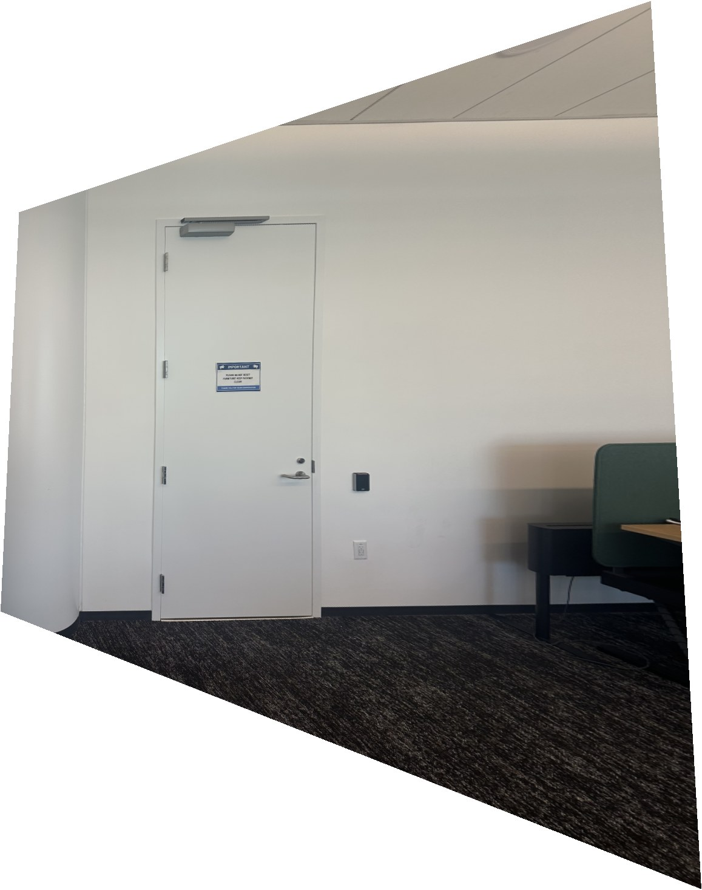
The door was shot from its left, so its far edge is shorter and its top and bottom slope towards each other. After the warp its sides are vertical and parallel, and the wall it sits in turns into the flat plane we’d see standing right in front of it. The floor gets pulled out to the right since it isn’t in the door’s plane.
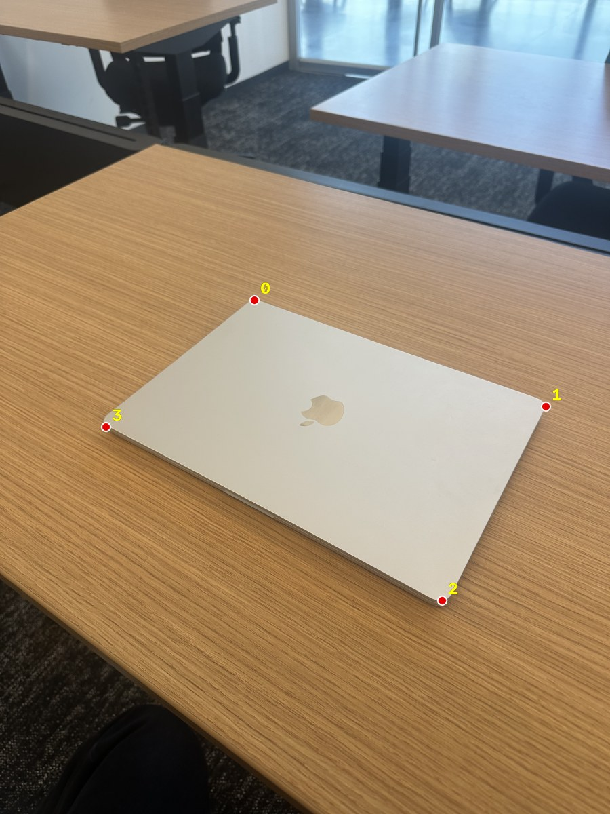
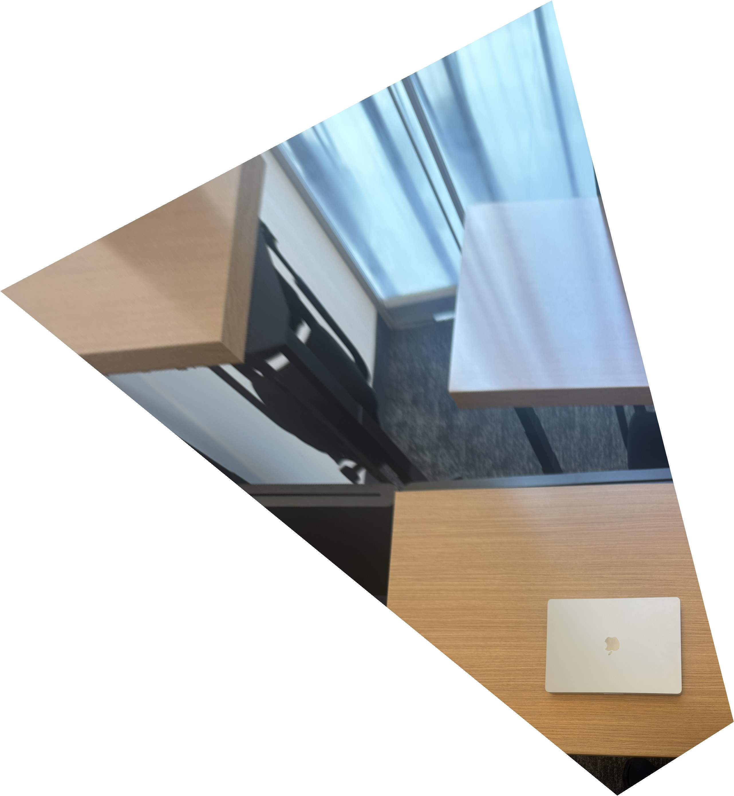
The laptop is a much harder case: it’s a ground-plane rectification, which turns the photo into a top-down view of the desk. The laptop comes out as a clean rectangle with the Apple logo round again, and the desk edge becomes a straight line. Everything that isn’t on the desk’s plane (the chairs, the other desks, the window) is smeared out towards the top-left, and the further back it was, the more it gets stretched, since a few pixels near the horizon now have to cover a huge area.
nearest neighbor vs bilinear
At full size the two look the same, so here are two crops magnified 4×:
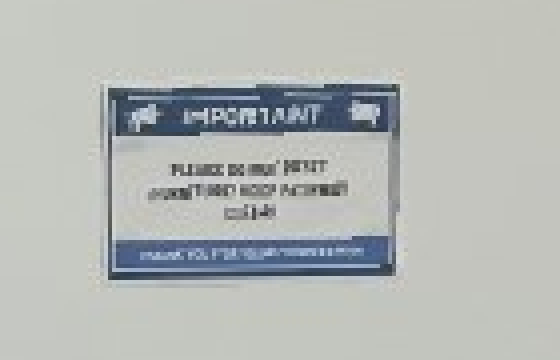
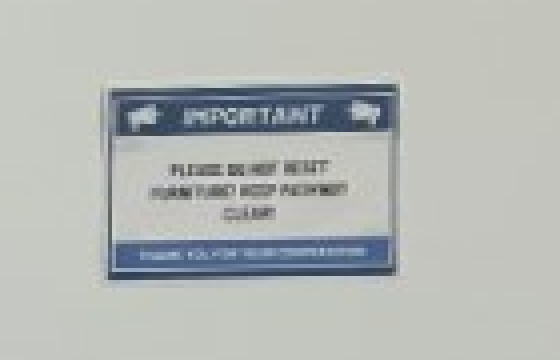
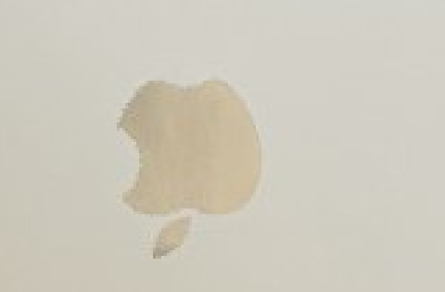
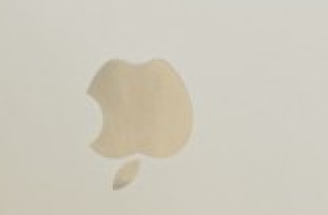
Nearest neighbor has visible staircases: the border of the sign breaks into steps, the lines of text get torn and shifted, and the edge of the logo is jagged. Each output pixel copies exactly one input pixel, so whenever the warp stretches or rotates the image, neighboring output pixels jump between input pixels. Bilinear blends the four neighbors instead, so edges come out smooth and the text stays in one piece, at the cost of being a little softer.
| warp time | output size | nearest neighbor | bilinear |
|---|---|---|---|
| door | 1157 × 1465 | 0.09 s | 0.19 s |
| macbook | 2564 × 2779 | 0.46 s | 0.82 s |
Bilinear takes about twice as long, which matches the amount of work: four lookups and a weighted sum instead of one lookup. Both are fully vectorized in numpy, so the difference doesn’t really matter here, and bilinear is used for everything else on this page.
For each set, the second photo stays unwarped and everything else is warped into its view. Each photo is registered to its neighbor, and the homographies are chained to reach the reference: image 4 goes through image 3 with H4→2 = H3→2 · H4→3. The canvas is the bounding box of every warped image’s corners, and all four images are warped onto that same canvas in one shot.
If one image simply overwrote the other, any difference in brightness between shots would show up as a hard edge along every seam. Instead every image gets a weight that is 1 at its center and falls linearly to 0 at its edges, warped along with it. The blend is a 2-level pyramid:
interior
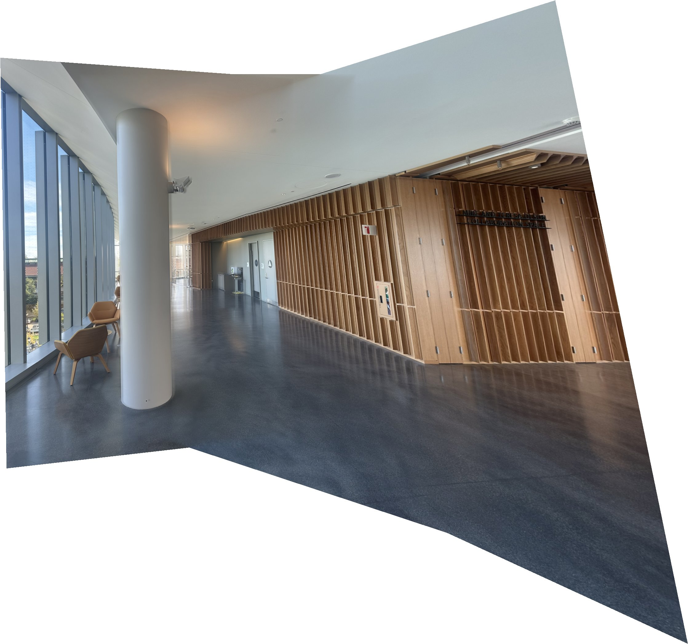
The wood slats run continuously from the doors at the end of the hall all the way to the collaboration space sign, and the seams in the ceiling and floor are invisible. The canvas bends out on both sides because the outer photos are turned furthest from the reference: a flat projection has to stretch them more and more the further they turn. The result also looks a little shaky in places, with edges that wobble slightly instead of lining up perfectly. This can be attributed to inaccurate clicking: a correspondence that is off by a few pixels tilts the homography slightly, and because the outer homographies are chained through the middle ones, those small errors add up toward the edges of the canvas.
building
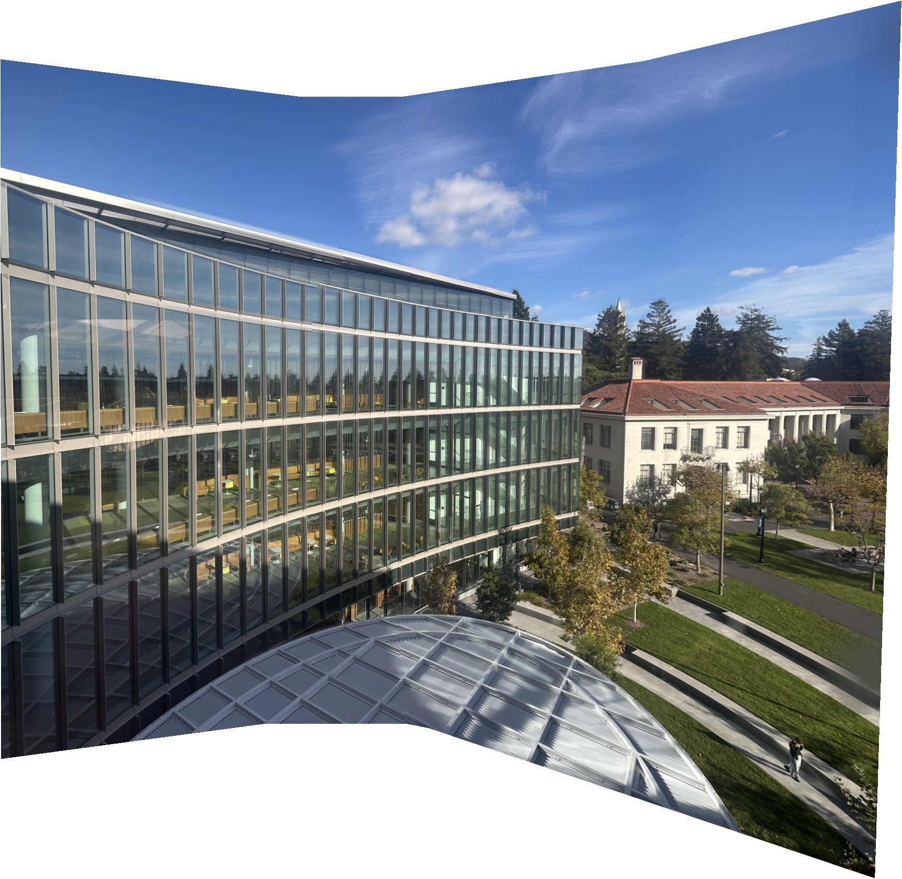
The window grid of the glass building lines up across all four photos, and so do the red roof, the trees and the paths in the courtyard. The one flaw is a small step in the glass building’s roofline about a third of the way across, where my points weren’t quite precise enough for a thin, high-contrast edge.
classroom
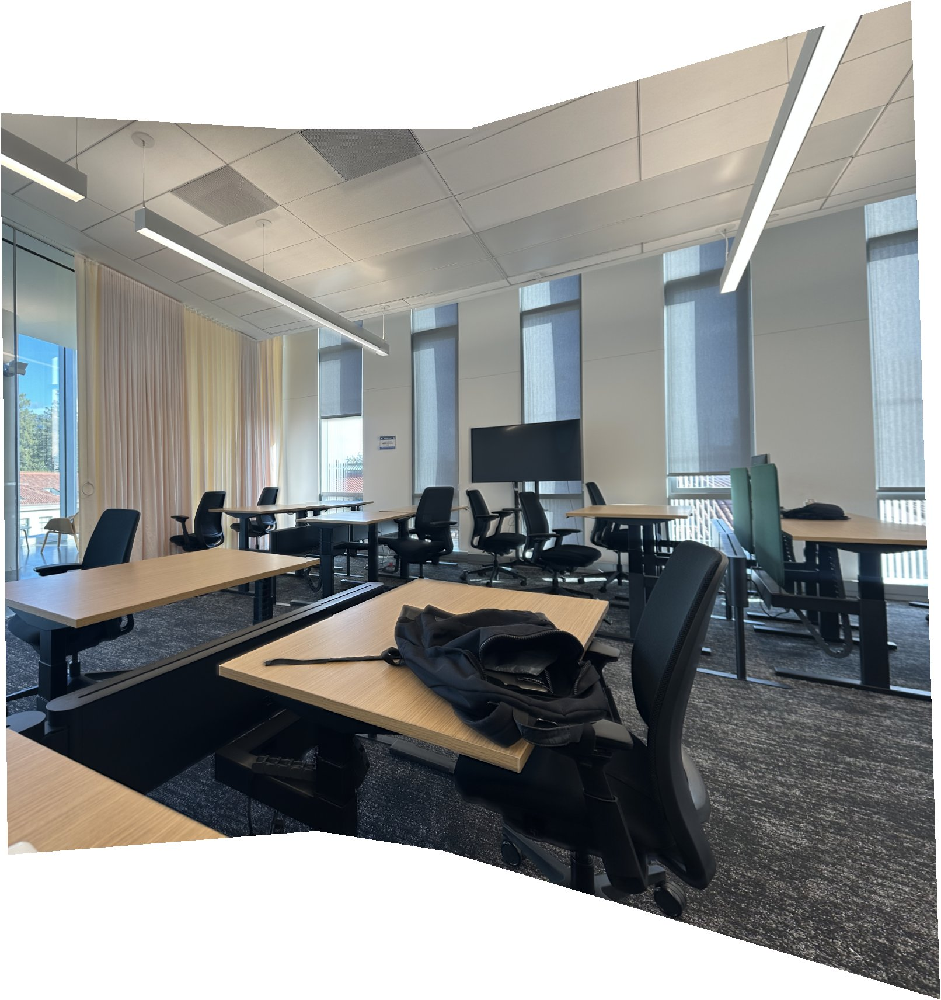
The windows, the TV, the ceiling grid and the long light fixtures all line up. This blending was supposed to be the most challenging, since the desk with the bag on it is right in front of the camera, so any side-ways movement would be very visible. Even so, the front desk came out without visible ghosting as the camera was more stable.